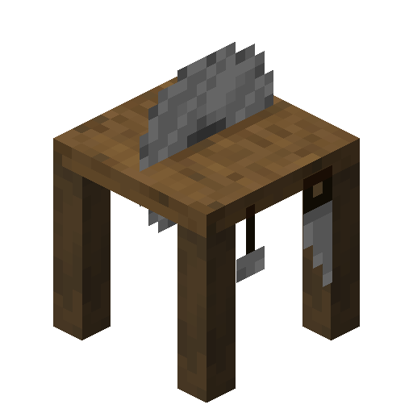

Sawmill
The sawmill is a very practical crafting station centered around wood blocks. It works the same as a regular stonecutter.

Crafting
| Crafting Table | ||
|---|---|---|
| Iron Ingot | ||
| Wooden Plank | Wooden Plank | Wooden Plank |
Sawmill Available Recipes
From a log you can craft:
- Log Stump
- Planks (4)
- Small Log Pile (2)
- Wood
From a plank you can craft:
- Bench
- Boat
- Ladder (4)
- Seat Rest
- Shelves
- Sign Post
- Stick (2)
- Wooden Button
- Wooden Door
- Wooden Fence (2)
- Wooden Fence Gate
- Wooden Pressure Plate
- Wooden Slab (2)
- Wooden Stairs
- Wooden Trapdoor
Notes
- "Wooden" here means any of the available wood types in your game, it does not represent a single block in particular.